Tranquilícese el autor , alguien ha leído despacio su libro , ha pensado sobre él y , como es menos ingenuo , hasta cree que alguien se decidirá a leer la obra que ahora comento.
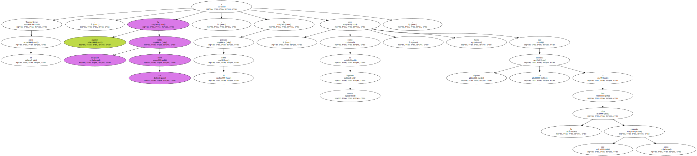A ese silencioso e ignorado amigo , me atrevo a decirle que no se arrepentirá.
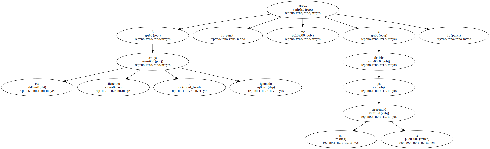Germán de Granda tiene una parte de razón , pero no toda.
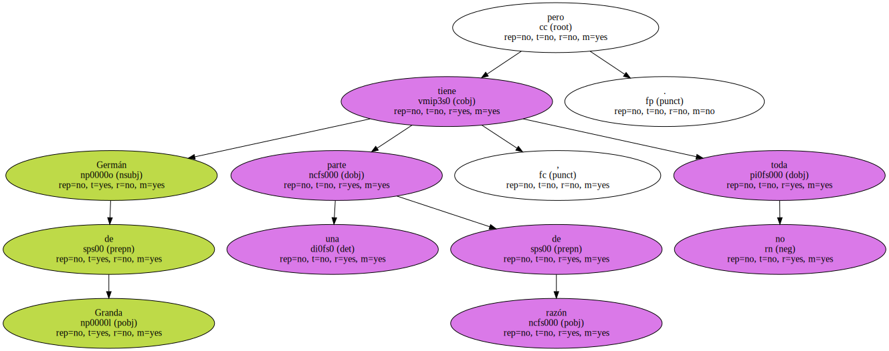Y la que tiene es más amarga de lo que él denuncia.
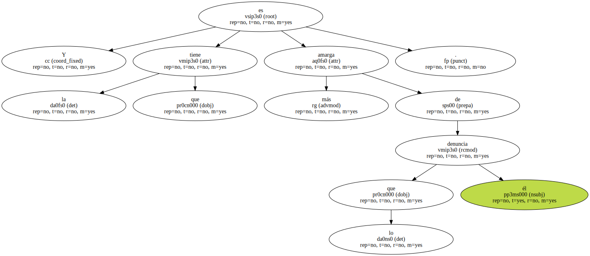Nada debe contar , sin embargo.

Don Diego Hurtado de Mendoza , que vivía días más gloriosos que los nuestros , sentía comezón por el trabajo y decía a su acompañante : " Trabajemos , Juan Páez ".
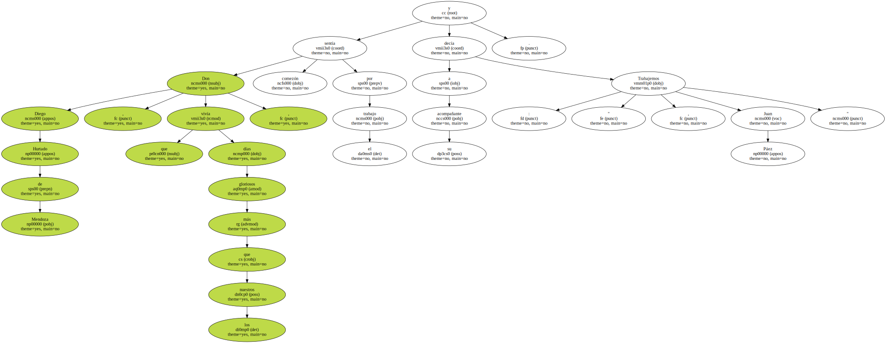Si él , en el brillo del mejor Renacimiento , así lo creía , ¿ por qué hoy no hemos de olvidarnos de las menudas miserias y ahincarnos en el estudio ?.
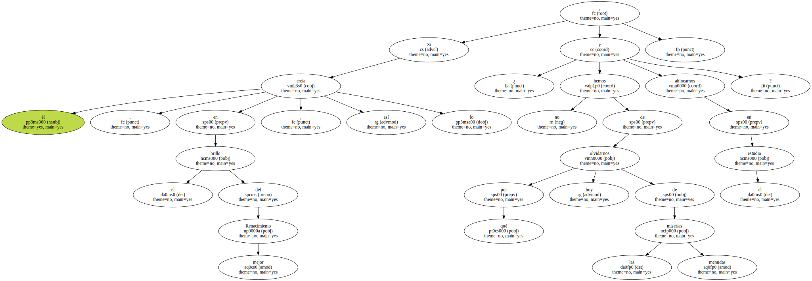" Germán de Granda , trabajemos ".
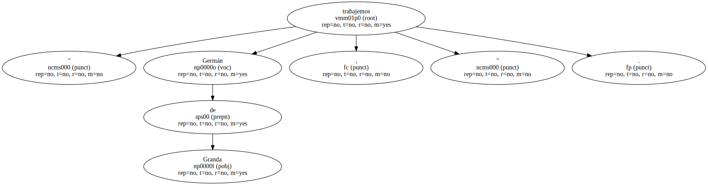Entonces poco importarán las conmemoraciones oficiales o el mutismo de quienes - teóricamente , al menos - deberían hablar.
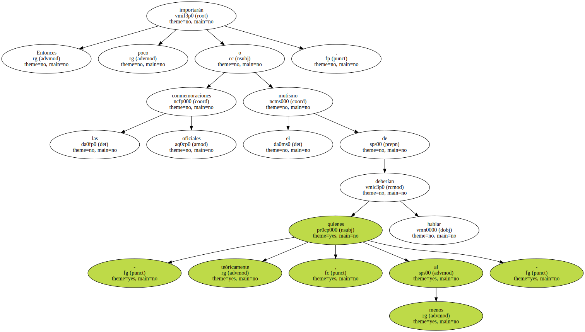Pero los libros publicados ( y han sido muchos ) y las ganas de trabajar de no pocas gentes ( no son escasas ) deberán hacer olvidar lo que en Germán de Granda es un inveterado pesimismo.
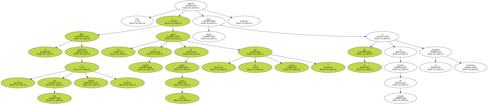Este libro reúne una veintena de trabajos dispersos.
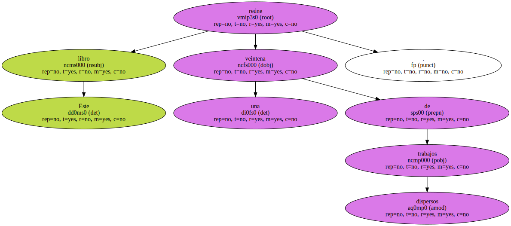Que sean más o menos coherentes es algo cuya incomprensión atribula al autor , pero son cuitas innecesarias.
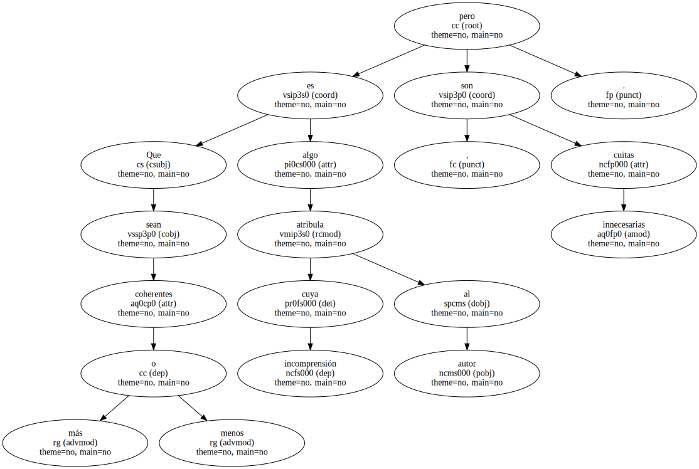Vaya por delante que puede encontrarse coherencia metodológica , de perspectiva o de talante humano.
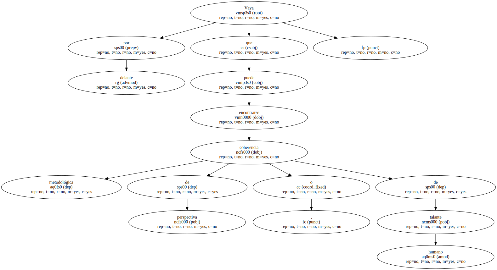Ya es mucho.
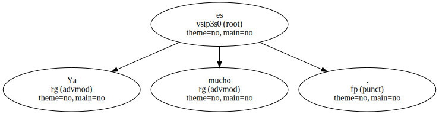Pero reunir trabajos dispersos , y difíciles de lograr , no es tarea desdeñable , sino que merece nuestro reconocimiento.
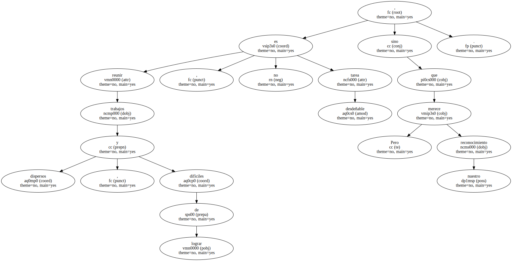